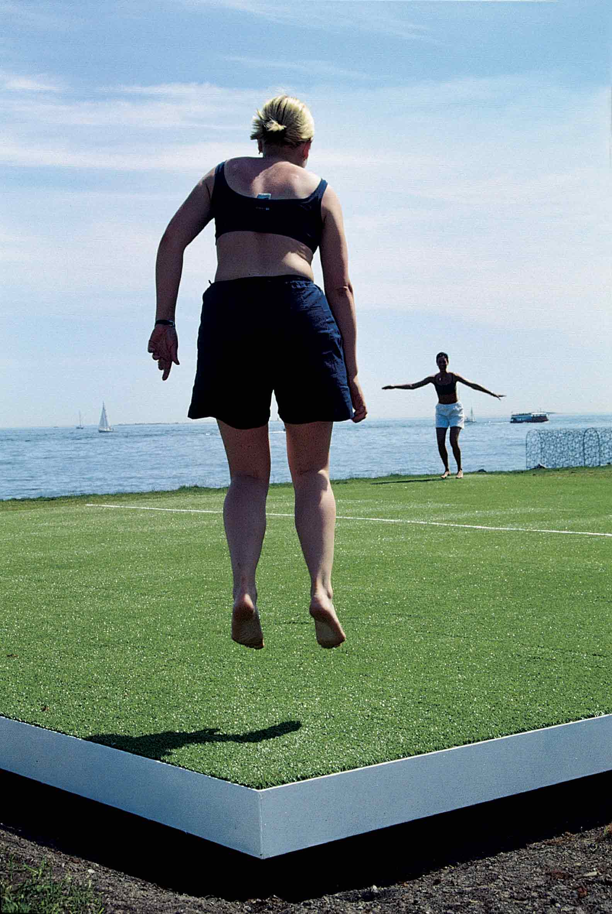
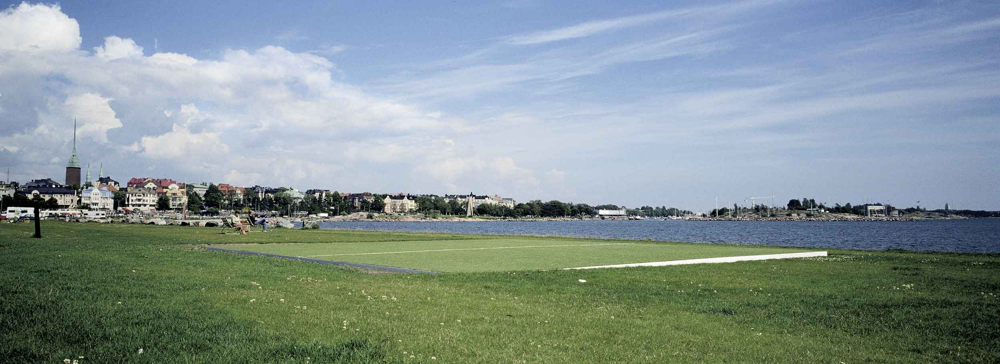
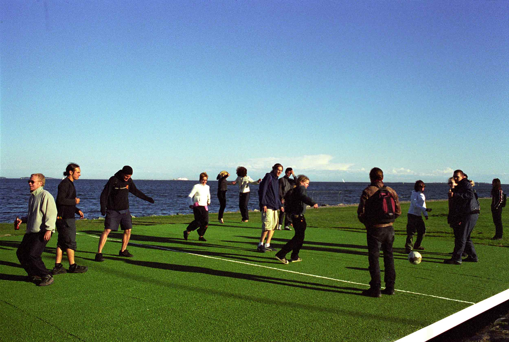

Under One Sky, Kiasma Museum of Contemporary Art, Helsinki
2000
Kiasma Museum of Contemporary Art in Helsinki asked us to propose a site for an outdoor group show in Helsinki
2000. We proposed an industrial seaside area between Helsinki's southern park-like recidential neighbourhood
and western harbour. The area is a man made ship yard "peninsula" on the top of former row of islands. On the
seashore facing to the south-east there is a half a kilometer long and 30m wide grass field that we proposed
for the site of the "Under one sky" exhibition.
Our own work for the show consisted of a square hole of 12x12x0.5m in the ground and a steel framed artificial
grass covered platform built on the top of it. The platform was supported with 9 van springs which made it
unstabile when one stepped on it. The idea was to replace the excisting grass with an artificial one and make
a look-a-like play ground that couldn't actually be used to any ball game nor other rational purpose.


